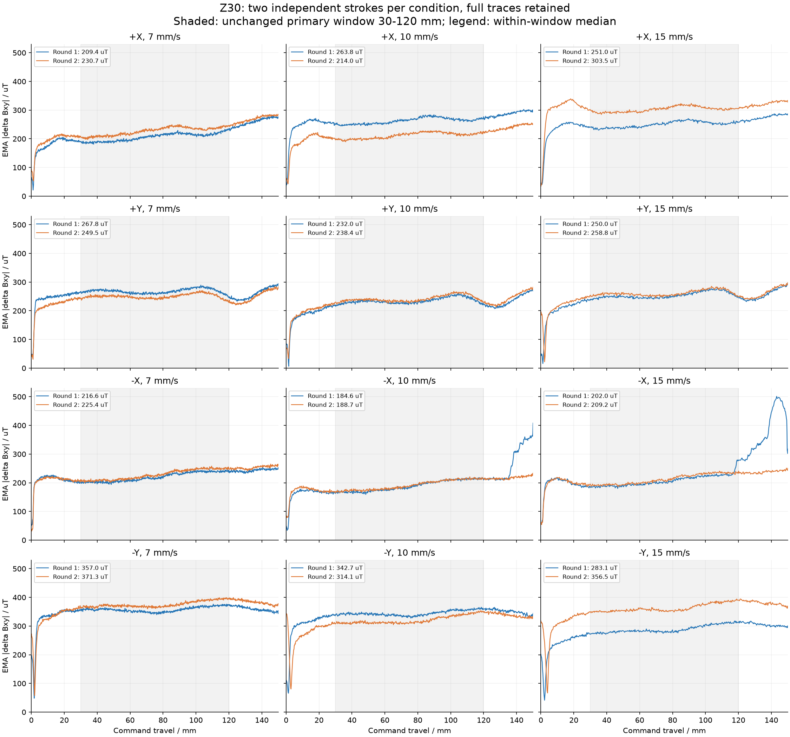
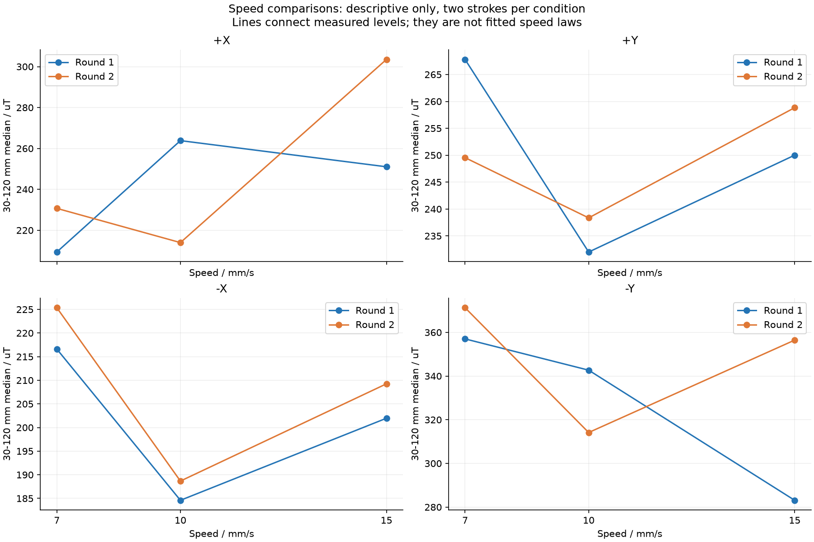
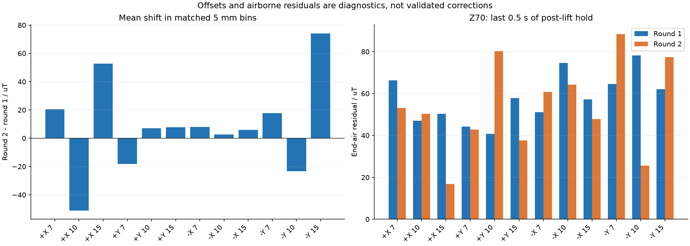

30笔已齐：6笔扫描，24笔Z30定高；四方向×三速度各有两笔独立记录。新增12笔与全批均无记录为invalid的传感器或TCP样本。
方向/姿态组合的差异可重复：两轮每个速度均为-Y最大；例如10 mm/s的-Y比-X高158.09和125.47 uT。方向、倾斜姿态、路径位置及固定执行顺序同时变化，尚不能归因于纯方向。
-X中段跨笔相差2.2%-4.0%，+Y相差2.7%-6.8%；+X的10/15 mm/s相差-18.9%/+20.9%，-Y的15 mm/s相差+25.9%。不能把所有条件的两笔平均后当作稳定标定值。
+X10、+X15及-Y15的重复差主要是整条曲线偏移：等距离分箱平均偏移分别为-51.03、+52.70、+74.04 uT；去除该单一偏移后的残差RMSE仅1.38、2.40、2.10 uT。这是重复差的描述，不是已验证的校正方法。
速度差异部分可重复：-X两轮均7>15>10 mm/s；7相对10高32.01/36.69 uT，15相对10高17.37/20.58 uT。+X和-Y的15相对10差异反号，不能采用统一的随速度单调变化公式。
-X首轮10/15 mm/s的408/501 uT后段峰值，第二轮未重现（全程峰值234/251 uT）；但六笔-X在中段末30 mm比前30 mm均高约36-43 uT，沿程变化仍可重复。保留首轮峰值，不作选择性删除。
按用户提供的实验背景，本轮不考虑水的影响，以触角装配偏向一侧及背景磁场为主要校准对象。采集脚本已在每个方向15度姿态、起点Z70单独归零，因此已有方向姿态的起点参考；沿程背景和加载后的状态变化仍需对照。
新增笔抬至Z70后的末段残差仍为16.79-88.43 uT；其起点与终点XY不同，且经历过接触。优先空载往返诊断，再扩展高度。
暂不发布方向增益或新前馈表。Z30单一高度不能同时辨识方向增益和偏置，旧9/25换笔前的X表也不能直接作为这支笔的参照。
每格两笔独立记录；统计窗口沿程30–120 mm，不包含起笔和120–150 mm末段。
| 方向 | 7 mm/s | 10 mm/s | 15 mm/s |
|---|---|---|---|
| +X | 209.4 → 230.7 | 263.8 → 214.0 | 251.0 → 303.5 |
| +Y | 267.8 → 249.5 | 232.0 → 238.4 | 250.0 → 258.8 |
| -X | 216.6 → 225.4 | 184.6 → 188.7 | 202.0 → 209.2 |
| -Y | 357.0 → 371.3 | 342.7 → 314.1 | 283.1 → 356.5 |
| 范围 | 传感器帧数 | invalid帧 | TCP样本 | invalid TCP | 最大定高TCP Z偏差/mm |
|---|---|---|---|---|---|
| 新增12笔 | 112744 | 0 | 4435 | 0 | 0.211 |
| 累计30笔 | 274746 | 0 | 10807 | 0 | 0.211 |



1. 四方向空载往返，各两次：10 mm/s、Z70，同方向15度姿态，原路径150 mm往返，起点/终点/回到起点各停10 s。检查位置依赖和回零漂移；优先+X/-X的4次，再+Y/-Y的4次。相比上一阶段只建议X方向4次，现在按用户明确的背景场校准目标覆盖全部四方向。当前采集入口没有空载模式，不使用--hold-z-mm 70。Z70对照用于诊断，不能直接当作Z30接触数据的可扣除零点。 新增8笔。
2. 空载/状态偏移可解释后，先固定10 mm/s，补Z35、Z27，四方向各两笔（16笔）；每轮另插入一笔+X/Z30参照（共2笔），检查参照跨笔偏移，总18笔。保持装配不变并使用新纸带；两轮交换高度顺序，并反转方向顺序。若空载显示明显位置影响并导致采集参考协议改变，应按新协议重新采对应Z30，避免把旧Z30与新协议强行合并。 新增18笔。
3. 用同一支笔的Z35/Z30/Z27定高数据比较仅增益与增益+偏置模型，按整笔验证。通过后增加45°、135°、225°、315°作为未参与拟合方向的验证，再决定是否补7/15 mm/s多高度数据。
主统计窗口沿用第一阶段预先规定的30-120 mm；完整0-150 mm轨迹和后段峰值均保留。5 mm分箱用于同位置对照，不算独立重复；每条件仅两笔，未作显著性或置信区间声明。
round1/round2按同条件记录的时间先后定义。第一轮速度顺序10→15→7，第二轮7→15→10；方向始终+X→+Y→-X→-Y。首轮为一个批次，第二轮为三个批次，因此不是完全随机且批次一致的因果设计。
两轮相同方向的起点、终点、命令Z30和倾斜轨迹一致；异步TCP几何诊断发现最大Z偏差约0.211 mm。这不能验证法向力、笔毫实际压入量，也不能排除小高度变化的影响。
抬笔后的空载残差不能直接从接触幅值中相减；XY、Z和受载历史不同。即使后续取得相同条件的空载参考，也应先处理三轴矢量而非直接相减两个模长。
用户补充：水的影响不大，本轮不考虑；触角偏向一侧，方向差异主要按装配不对称和背景磁场处理。装配状况是用户提供的信息；单靠这批接触数据还不能定量分解装配与背景场各自的贡献。
校正候选仅限后续可辨识模型：固定v=10时g_theta(Z)=k_theta*f_X(Z)+b_theta，换算g_X=(g_theta-b_theta)/k_theta。f_X需由同一支笔、同一加载协议的新高度数据建立。三个高度可初步检查仿射关系；四个轴向方向的拟合不能证明对任意角度有效。
此页独立保存第二轮结论，第一阶段报告未覆盖。分析脚本固定截止记录，后续添加原始数据不会改变本批范围。